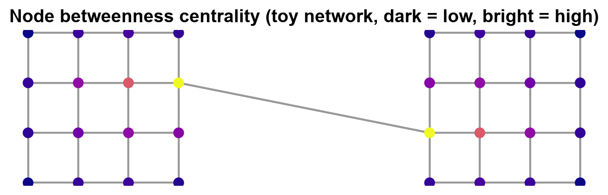
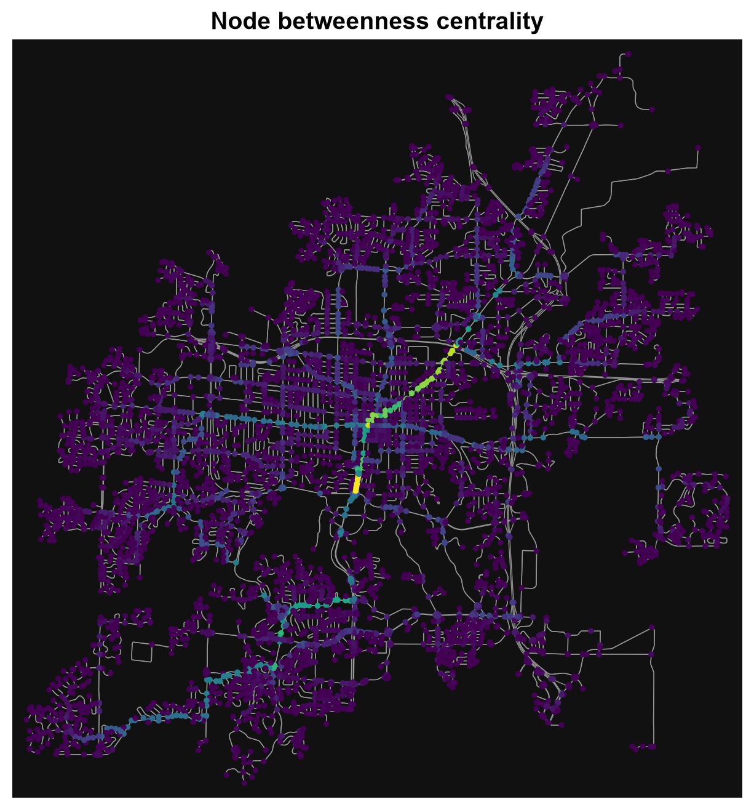

5.3. Network Metrics and Centrality#
5.3.1. Learning objectives#
By the end of this section, you should be able to:
project a graph before measuring and choose an area rule for densities;
define the basic network statistics and say what each one depends on;
explain how simplification, intersection cleaning, and the area rule change a statistic;
check connectivity before computing centrality;
distinguish degree, closeness, and betweenness centrality and their computational cost;
use a documented sample when exact betweenness is too expensive; and
interpret centrality as a diagnostic and not as observed traffic.
Section goal
Describe the structure of a street network with measures that can be compared and checked. Small synthetic networks with known structure show what each statistic and centrality measure reports, and the same code then runs on the Columbia graph.
5.3.2. Project before measuring#
OSMnx graphs downloaded from OpenStreetMap commonly use geographic coordinates, so node
positions and edge geometries are in degrees. A density needs an area in square metres,
and a geometric length needs metres, so the graph must be projected before it is
measured, as in Chapter 4. ox.project_graph chooses a UTM zone [Snyder, 1987] from the graph itself. It leaves the length attribute, already in metres, unchanged.
Densities also need an area, and the choice of area is a decision, not a detail. Table 5.11 lists the common rules and the bias of each.
Area rule |
Strength |
Bias |
|---|---|---|
Convex hull of the nodes |
Needs no extra data |
Includes empty space inside a non-convex network |
Bounding box of the nodes |
Simplest to compute |
Overstates the area of any irregular network |
Place boundary |
Matches an administrative area |
Includes water and unbuilt land, so densities fall |
Buffered streets |
Follows the built footprint |
Depends on the buffer distance |
The cell below loads the drivable network of Columbia, Missouri, from S01 so that this section runs on its own. The first download is cached, and later runs read the cache. The projected graph and a convex-hull area follow.
5766 13888 epsg:4326
This download has 5,766 nodes and 13,888 edges, slightly more than the 5,749 and 13,854 of S01. The same place and settings can give a slightly different graph on a later day, most likely because OpenStreetMap is edited continuously, so the retrieval date belongs in the record.
The convex hull is only an approximation of the study area. For a city comparison, use the same boundary definition and area rule for every graph, and record the choice [Boeing, 2020].
5.3.3. Basic network statistics#
ox.basic_stats summarizes a projected graph in one call. Table 5.12
defines the main entries and what each one is sensitive to.
Statistic |
Definition |
Depends on |
|---|---|---|
|
Number of nodes and of directed edges |
Simplification and network type |
|
Average degree, equal to 2m / n |
A two-way street adds two edges, so it is about twice the streets per node |
|
Average number of physical streets meeting at a node |
Simplification |
|
Mean edge length, in metres |
Simplification |
|
Intersections per square kilometre |
The area rule and intersection cleaning |
|
Street length, in metres, per square kilometre |
The area rule |
|
Total edge length divided by the total straight-line distance between edge ends |
Simplification, because bends hidden inside edges raise it |
The toy network below is an L-shaped grid of two-way streets 100 m apart, built directly in a projected CRS so that its statistics can be checked by hand.
n 65
m 224
k_avg 6.892
streets_per_node_avg 3.446
edge_length_avg 100.000
circuity_avg 1.000
convex hull of nodes 0.560 km² 116.1 intersections/km² 20.0 km of street/km²
bounding box of nodes 0.640 km² 101.6 intersections/km² 17.5 km of street/km²
streets buffered 50 m 0.647 km² 100.4 intersections/km² 17.3 km of street/km²
k_avg is 6.9 although a typical node meets only 3.4 streets, because every two-way street
counts as two directed edges, so streets_per_node_avg is the number to quote for
intersections. The circuity of 1 is exact here, since every edge is straight. The three area
rules give three densities, 116, 102, and 100 intersections per square kilometre, a 16%
spread from the choice of area alone, which is why the rule belongs in the record.
Intersection counts have a second subtlety. A crossing mapped as two close junctions is
counted twice, and clean_int_tol merges junctions closer than a tolerance, in metres.
The toy crossing below is an east-west street met by a north street and a south street
8 m apart.
intersections as mapped: 2
intersections after 15 m merge: 1
The staggered crossing is one intersection in the street, but two in the data, and the 15 m tolerance restores it. The tolerance is itself a parameter, so the value used belongs in the methods note. On the Columbia graph the same call, with the cleaned density added to the printed keys, is:
n 5766
m 13888
k_avg 4.817204301075269
edge_length_total 1972706.3536797334
edge_length_avg 142.04394827763056
intersection_density_km 23.165820450761945
clean_intersection_density_km 19.10990303413674
street_density_km 5455.958939404555
circuity_avg 1.0776298025819988
Merging junctions within 15 m lowers the intersection density from 23.2 to 19.1 per km², a drop of 17.5%, which is as large as the whole spread between area rules in the toy network. The mean edge is 142 m, and a circuity of 1.078 means that edges are about 8% longer than the straight line between their end nodes. Every one of these values depends on the convex-hull area and the 15 m tolerance used here.
These are descriptive measures, not universal walkability scores. OSM coverage, boundary choice, simplification, and network type all affect them.
5.3.4. Connectivity and centrality#
Connectivity describes whether movement can pass through the graph. S02 separated weak from strong connectivity, and the cell below counts the weak components of the Columbia graph and the size of the largest. The largest component’s share of all nodes is the number to report, because a graph that is 99% one component is a very different object from one that is split in half:
weak components: 1
largest component: 5766
Centrality identifies structurally important nodes or edges, and each measure asks a different question. Table 5.13 compares the common ones.
Measure |
Question it answers |
Cost |
Caution |
|---|---|---|---|
Degree centrality |
How many direct connections does the node have? |
Cheap |
Nearly the same as |
Closeness centrality |
How near is the node, on average, to all others? |
One shortest-path search per node |
Defined within a component, and inflated near the centre of any study area |
Betweenness centrality |
What share of shortest paths pass through the node or edge? |
Highest: shortest paths between all pairs |
Depends on the cost weight, the boundary, and which pairs matter |
Betweenness [Brandes, 2001, Freeman, 1977] is the usual choice for routing questions, because it counts the shortest paths that actually run through a place. NetworkX chooses the minimum-weight edge when parallel edges exist, so a multigraph can be used directly. The toy network below joins two small grids with a single bridge. Degree should miss the bridge, and betweenness should find it.
node betweenness degree
14 0.539 8
101 0.539 8
105 0.307 8
10 0.307 8
nodes sharing the top nodes' degree: 10
most central edge: (14, 101) (0.258)
The two bridge ends, nodes 14 and 101, have a betweenness of 0.54, well above the next
nodes at 0.31, yet ten nodes share their degree of 8, so degree cannot single them out. Edge
betweenness points at the bridge itself. Exact betweenness runs a shortest-path search from
every node, which is too slow for a city, so NetworkX can estimate it from a random sample of k source nodes [Brandes and Pich, 2007]. A fixed seed makes the estimate repeatable:
exact top four: [14, 101, 105, 10]
sampled top four: [101, 14, 105, 10] (k = 10 of 32 nodes)
most central node in a plain 9 x 9 grid: 40 (the geometric centre is node 40)
betweenness at the centre 0.142, at a corner 0.0013
A sample of 10 of the 32 sources recovers the same four nodes, and the sample size and seed are what make such an approximation a documented method, not a silent shortcut. The plain grid shows the boundary effect from S02 [Gil, 2017] in centrality form: with no special feature anywhere, the middle of the grid is the most central place, simply because more shortest paths cross it than cross the edge. Centrality near a study-area boundary and at its centre is therefore partly an artefact of where the boundary was drawn.
On the Columbia graph the full computation is impractical, so the cell below uses a documented sample, with edge length as the cost:
[(12446135329, 0.20668806384455238), (12446135289, 0.20664989590562108), (5195228113, 0.2052529493407356), (5195228111, 0.20523837612768908), (1485863319, 0.2051037473976405), (5195228112, 0.20394621790423317), (10196678666, 0.20354233171408742), (11880766133, 0.20302810548230393), (12446135458, 0.20285426786953503), (2825423374, 0.194030187369882)]
The ten highest scores lie between 0.193 and 0.204, within about 5% of each other, so their ranking has no real meaning: the map below suggests that they lie along one corridor, and a different seed or sample size could reorder them. What the sample does support is that these nodes are far more central than the typical node.
Betweenness can be expensive on a large graph. Use a documented sample or an appropriate approximation rather than silently dropping the calculation, and report the sample size and seed with the result.
5.3.5. Visualize the measure#
Colour the nodes by the measure with a colour map that has a visible scale. The toy network shows the pattern: the bridge ends stand out, and the centrality fades toward the corners of each grid.


Fig. 5.1 Node betweenness centrality in the toy network of two grids joined by one bridge (dark is low, bright is high).#
In Fig. 5.1, the two bridge ends are the brightest nodes, with a betweenness of 0.54, and the nodes next to them are the next brightest, with 0.31. The colours then fade toward the corners of each grid, the same pattern as the plain grid above, so even without the bridge the centre of a grid would outrank its edge.
The same plot on Columbia colours each node of the projected graph by its sampled betweenness:


Fig. 5.2 Sampled node betweenness centrality (k = 500, seed 42, edge length as cost) on the drivable network of Columbia, Missouri. Data © OpenStreetMap contributors.#
Only a few nodes stand out in Fig. 5.2: a short bright segment just south-west of the centre and a corridor of high scores running north-east from the core. Most of the network, especially the residential cul-de-sacs, is dark and close to zero. No colour bar is drawn, so read the colours as relative order, not as values, and remember that the sample uses only 500 source nodes and that the city boundary cuts off through traffic from outside.
A highly central street or intersection is a candidate for closer inspection, not proof that it carries the most observed traffic. Combine centrality with counts, traffic data, land use, or other evidence.
5.3.6. Summary#
Network metrics describe structure only in the context of a declared graph, boundary, projection, and source. Project before measuring, state the area rule and the intersection tolerance, normalize comparisons, check connectivity, and use a documented sample when betweenness is too costly. Interpret centrality as a diagnostic, aware that the study-area boundary shapes it, and not as a standalone outcome.